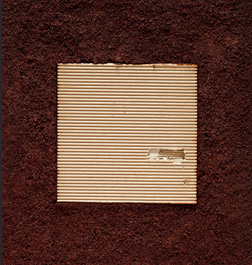
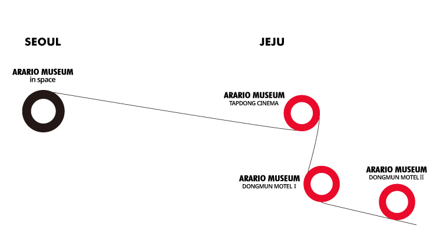

GREETING
때때로 나는 사업을 하는 동안 일을 지속하지 못할 만큼 재정적인 어려움에 부딪히곤 했습니다.
때때로 나는 죽음에 가까운 공포의 감정에 사로잡혀 옴짝달싹할 수 없을 때도 있었습니다.
하지만 나는 이제 예술로 표출되는 아름다운 꿈의 세계로 진입하려고 합니다.
- (주)아라리오 회장 김창일
PHILOSOPHY
서울과 제주, 보존과 창조로 쓰는 새로운 뮤지엄 역사
-

Simple with Soul은 아라리오의 창업자이자 컬렉터 그리고 아티스트인 CI KIM이 아라리오뮤지엄 프로젝트를 구상하면서 정립한 뮤지엄의 가치이자 개념 혹은 철학입니다. 문자 그대로 ‘영혼을 머금고 있는 단순함’이라는 뜻입니다.
단순함은 디자인, 인테리어 등 뮤지엄의 보여지는 부분 뿐 아니라 뮤지엄의 운영방식을 정하는 데에 있어서도 중요한 기준점이 되었습니다. 처음부터 CI KIM은 '뮤지엄이란 무엇인가'라는 너무나도 심플하면서도 기본적인 질문을 통해 어떤 뮤지엄을 만들어야 하는지 고민하였습니다. 질문이 간단하니 답도 간단하였습니다.
그것은 바로 작품이 주인공이 되고, 관람객이 작품과 호흡할 수 있는 미술관이었습니다. 결국 관람객과 작품, 이 둘이 아라리오뮤지엄을 구성하는 가장 중요한 요소입니다. 작품을 감상하는데 있어서 작품을 돋보이게 하는 가장 중요한 것은 조명입니다. 따라서 조명선택에 많은 신경을 썼습니다. 또한 인테리어에서는 작품 외에 장식적이고 시선을 빼앗는 인위적인 요소들은 과감히 삭제하였습니다. 이는 공간사옥(서울), 탑동시네마 & 바이크샵, 동문모텔Ⅰ(이상 제주)과 같은 기존의 건물들을 뮤지엄 공간으로서 선택하고, 이들을 최소한의 리노베이션으로만 전시장으로 탈바꿈시킨 이유가 됩니다.
앞서 언급한 최소한의 리노베이션은 뮤지엄의 또 다른 중요한 요소인 관람객들을 위해 적용되었습니다. 관람객들의 안전, 작품 감상에서의 쾌적함이 그것입니다. 난간 등 동선에서 관람객들의 안전에 문제가 있는 부분만 기존의 건물에 덧대는 식으로 작업하였습니다. 그리고 쾌적한 전시관람 환경 구성이야 말로 아라리오뮤지엄 프로젝트에 가장 어려운 과제 중 하나였습니다.
Soul은 뮤지엄을 구성하는 작품, CI KIM의 컬렉션들입니다. CI KIM 스스로 작품을 선택하는 기준으로 '작가의 영혼이 담겨있는가 없는가' 라고 말할 정도로 이 Soul은 뮤지엄 컬렉션에 고스란히 담겨 있습니다. 이름 모를 작가라도 작가의 열정과 에너지, 혹은 작가의 철학이 고스란히 담겨 있다면 그의 컬렉션에 포함시켰습니다. 작품자체뿐 아니라 작품들간의 상관관계를 정하는 전시구성에 있어서도 그의 이런 철학이 반영되었습니다. 큰 공동전시공간을 제외하고는 한 전시 공간에 한 작가라는 철학에 따라 한 작가의 작품세계를 온전히 관람객들에게 보여줄 수 있게 전시를 구성하였습니다.
또한 확장된 전시 공간으로서 더 많은 관람객들에게 다가가기 위하여 홈페이지에 많은 노력을 기울였습니다. 홈페이지를 통해 뮤지엄에 대한 기본정보를 얻고 어떤 뮤지엄일지 알고 싶어하는 분들이 많아짐에 따라 홈페이지는 갈수록 뮤지엄에 중요한 요소가 되고 있습니다.
Simple with Soul은 CI KIM의 개인 삶의 철학이자 아라리오뮤지엄의 철학입니다. 한 컬렉터가 가지고 있는 생각과 열정, 작품에 대한 철학을 볼 수 있는 것이 Private Museum에서 관람객들이 찾을 수 있는 또 하나의 가치가 아닐까 생각해봅니다. 이를 위해 아라리오뮤지엄의 모든 스탭들은 좋은 작품들을 지속적으로 보여드리고, 쾌적한 작품감상 환경을 유지하는 데 모든 노력을 다할 것 입니다. 그리고 이 초심을 유지하는 공간이 되도록 끊임없이 혁신하고 노력하겠습니다. 관람객들이야말로 Simple with Soul의 마지막
퍼즐입니다.
MUSEUM ROAD

• 각 원을 클릭하시면 해당 뮤지엄의 위치를 "Google 지도"에서 확인하실 수 있습니다.